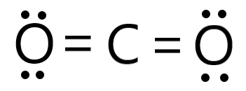
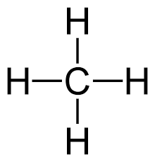
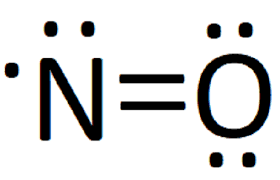
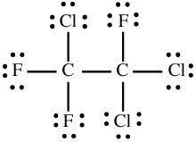
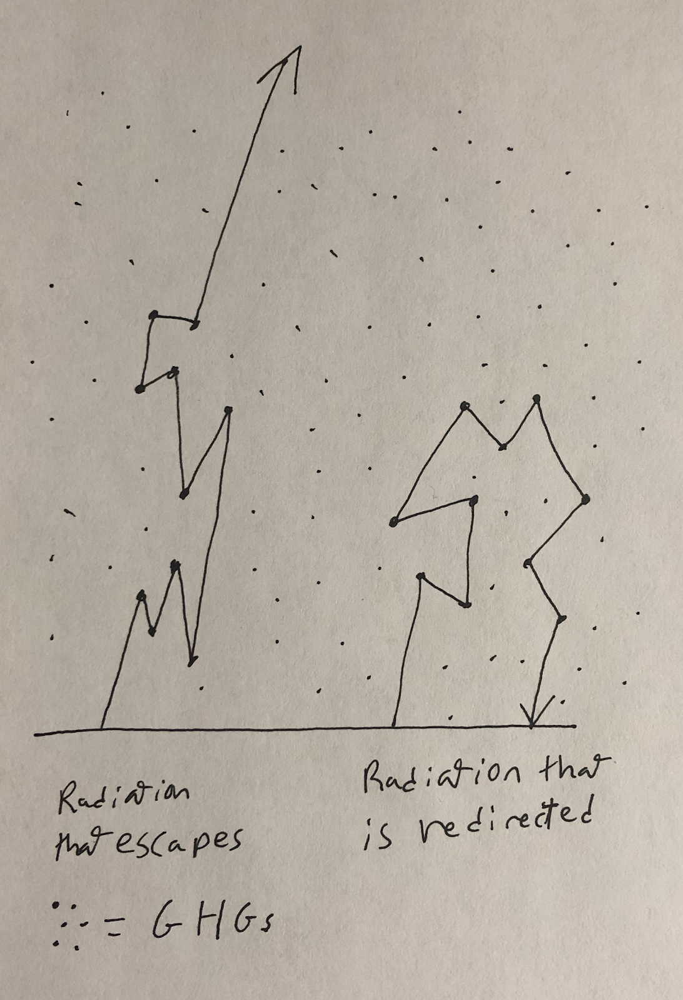

Greenhouse Gasses
Quick Def: Greenhouse gasses are atmospheric gasses that do not interact with visible light but do interact with infrared radiation. They create the greenhouse effect, which keeps the earth warm.
Greenhouse gasses can absorb infrared radiation because of their complex chemical structure. Infrared radiation has a longer wavelength than visible light, which allows it to interact with chemical bonds. LM Electromagnetic Spectrum Greenhouse gasses have lots of bonds for the IR radiation to interact with. Bonds in molecules can oscillate where the atoms on either side move closer to each other and farther apart. The bonds have a bond oscillation rate which defines how the elements on both sides move. Greenhouse gases are gases that have the correct bond oscillation rate to interact with IR radiation.
Gas molecules with more bonds have a greater chance of absorbing IR. The majority of the atmosphere (99%) is made up of O2 and N2. These simple molecular structures aren’t able to interact with IR. The percentage of greenhouse gasses in the atmosphere is so tiny that we use a measurement called parts per million. Atmospheric CO2 levels are currently at 409.8 PPM. CO2 is more complex and is able to absorb IR. CO2 is the GHG that gets the most attention, but there are other GHGs with complex structures. The four main GHGs are carbon dioxide (409.8 PPM), water vapor, methane (1.7 PPM), and nitrous oxide (0.331 PPM).
More complicated molecules can trap IR radiation better. This means that it is not entirely accurate to compare the PPMs of different greenhouse gasses directly. Scientists created a measurement called global warming potential to standardize the measurements in relation to the amount of IR trapped. Scientists set the GWP for CO2 to 1 and then based the other measurements off of this unit. A molecule with a GWP of 10 absorbs ten times more IR than CO2. GWP grows quickly with molecular complexity. Below are lewis dot structures and GWPs for common greenhouse gasses.
CO2: 1 GWP
Methane: 21 GWP
Nitrous Oxide: 310 GWP
Freon: 1,810 GWP
Freon is a molecule that was commonly used in refrigeration. It is very complex and is 1810 times more effective at warming than carbon dioxide. In 2010 the United States banned the use of freon in HVAC systems. I did not give the PPM, or GWP for water vapor, because extra water vapor is quickly removed from the atmosphere by the water cycle. Any water vapor-producing process has no impact on the average temperature. The carbon and methane cycles are much slower at removing these gasses, so extra carbon added to the atmosphere has a significant effect on the climate. LM Carbon Cycle
When a greenhouse gas comes in contact with IR radiation, the bonds absorb the energy and begin oscillating. After a short period, the molecule reemits the radiation in a random direction. The energy then goes through a winding path of repeated absorptions and remittances. This journey will eventually end with the radiation either escaping out into the atmosphere or being reabsorbed by the ground.
IR Escaping, and Trapping
If the IR radiation hits the ground, then it will be reabsorbed. Greenhouse gases limit the amount of energy the earth can push out into space by causing some of the emitted energy to be reabsorbed. They do this without restricting the amount of energy coming in from the sun. The imbalance of incoming and outgoing energy causes the earth system to gain energy and increase in temperature. LM Planetary Energy Balance